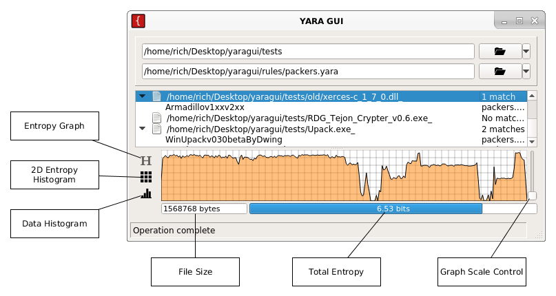

## Graphs and Data Visualization in YARA GUI
<a href="yara_gui_entropy_graph.png">

</a>
### Total Entropy
Total file entropy is rendered as a progress bar.
The entropy is calculated over a *byte* distribution, so possible values are between 0 and 8.
### Entropy Graph
A byte distribution is calculated *d[bytes[i]]++* over equally sized chunks of the entire file.
Each point on the line graph represents the entropy calculated over the distribution for that chunk.
The Horizontal axis represents the position in the file, with offset 0 at the left.
The vertical axis represents the entropy for the chunk, between 0 and 8.
### 2D Entropy Histogram
A 3D distribution is calculated *d[bytes[i]][bytes[i+1]][bytes[i+2]]++* over the entire file.
The entropy over the last byte, *z*, is calculated, *d[x][y][z]*, and is plotted at coordinate *x,y*.
The axis start at byte 0x00 in the top left, and byte 0xFF in the bottom right.
The colour of the pixel indicates the entropy or *information content* of that byte sequence in the file.
A white pixel indicates high entropy, a black pixel indicates low entropy.
The slider will change the scale so that low entropy sequences are more easily visible.
### Data Histogram
A distribution is calculated *d[bytes[i]]++* and the result is rendered as a bar chart.
The left-most bar represents the frequency of 0x00 bytes in the file, while the right-most bar represents the frequency of 0xFF bytes in the file.
<a href="http://sigint9.github.io/yaragui/">Return to the YARA GUI Homepage</a>